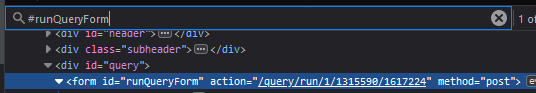

This API allows you to authenticate as a Stackoverflow user. When logged in, you can execute Stack Exchange Data Explorer (SEDE) queries via REST API.
Normally, you can retrieve various info about users, posts, scores... on Stackoverflow using the official SE API. But due to the brittle nature of REST API, it does not allow you to construct many complex queries without making multiple sub-optimal requests, sometimes the task is not feasible at all.
SEDE on the other hand, is a SQL playground where you can execute arbitrary queries to get, transform, combine or aggregate the data however you want. Remember, you are using SQL which is a whole-ass query language instead of a couple of predefined methods with hardcoded params to get the data.
The problem is that the SE API (which sucks ball) is official and supported while the SEDE does not have any formal API. Thus, this project happens. It provides you a way to authenticate the users and get the auth cookie in return.
When you compose a new query in SEDE, you create an endpoint. Everytime you edit and run the query, a new endpoint with a corresponding revision is generated. To use the endpoint, you must pass the auth cookie as mentioned previously.
Comparisons between SEDE and SE API:
| SEDE API | SE API |
|---|---|
| ❌ Unofficial | ✔️ Official |
| ❌ Updated once a week | ✔️ Up-to-date |
❌ Method: GET |
✔️ Methods: GET, POST, DELETE (*) |
| ✔️ Can construct complex queries. Timeout is the only limitation | ❌ Cannot construct complex queries. Its existence is the limitation |
| ✔️ Max 50,000 rows per request | ❌ Max pagesize: 100 per request |
| ➖ Quotas: Unknown | ✔️ Quotas: 10,000 per day |
| ❌ Can only access public data | ✔️ Can access user's private data |
*Certain requests require an access token
npm installnpm startbody = new URLSearchParams({
email: 'your.email@gmail.com',
password: 'your_password',
})
fetch('http://localhost:80/auth', { method: 'POST', body })
.then(res => res.json())
.then(data => console.log(data))
/ Shows this help
/auth Authenticates the user
/query/run/:siteId/:queryId/:revisionId Execute the query
/Shows this help
/auth POSTAuthenticates the user using Stackoverflow account to grant access to the SEDE API
Body: Form Data
{
"email": "your.email@gmail.com",
"password": "your_password"
}
Response
{
"authCookie": ".ASPXAUTH=..."
}
/query/run/:siteId/:queryId/:revisionId POSTExecute the query. It has 3 parameters:
:siteId: The ID of the site. 1 for Stackoverflow. See the full list of all site IDs here.:queryId: ID of the query.:revisionId: ID of the query revision. Think of it like a commit hash in git history.Headers
{
"auth-cookie": ".ASPXAUTH=..."
}
Body: Form Data
The number of the params in the body depends entirely on the query itself
This query has no params
SELECT * FROM VoteTypes
This query has one required parameter: userId
SELECT * FROM Users WHERE Id = ##userId##
Example request Body:
{
"userId": "1"
}
This query has one optional parameter and one required parameter. If
minScore is not provided, it uses the default value 300.
SELECT * FROM Posts
WHERE Score > ##minScore:int?300##
AND Tags LIKE '%' + ##tag:string## + '%'
Example request Body:
{
"tag": "py"
}
Response
{
"resultSets": [
{ /* Table 1 */ },
{ /* Table 2 */ },
...
]
}
You can create a whitelist of origins that are allowed to call the API. Create .env.local in the root
directory with the following content:
ORIGIN_WHITELIST=https://example-1.com,http://example-2.com
By default, the whitelist contains all origins. Once you define your own whitelist, any origins not from that list will be blocked.
The example below demonstrates the workflow to create a query and then use the newly generated SEDE API endpoint to execute the query.
Go to SEDE. Create a new account if you don't have one.
Hit Compose Query to create a new SQL query and paste the code below
-- UserId: User ID
DECLARE @userId INT = ##UserId:int##
-- MinPost: Min number of posts
DECLARE @minPost INT = ##MinPost:int?5##
-- TopTags: Top n Tags
DECLARE @topTags INT = ##TopTags:int?10##
SELECT TOP (@topTags)
Tags.tagName,
SUM(CASE WHEN Posts.PostTypeId = 1 THEN Posts.Score ELSE 0 END)
AS [Total Question Score],
SUM(CASE WHEN Posts.PostTypeId = 1 THEN 1 ELSE 0 END)
AS [Question Posts],
SUM(CASE WHEN Posts.PostTypeId = 2 THEN Posts.Score ELSE 0 END)
AS [Total Answer Score],
SUM(CASE WHEN Posts.PostTypeId = 2 THEN 1 ELSE 0 END)
AS [Answer Posts],
SUM(Posts.Score) AS [Total Score],
COUNT(*) AS [Post Count],
ROUND(AVG(CAST(Posts.Score AS FLOAT)), 1, 1) AS [Average Score]
FROM Posts
JOIN PostTags
ON Posts.Id = PostTags.PostId OR Posts.ParentId = PostTags.PostId
JOIN Tags
ON PostTags.TagId = Tags.Id
WHERE Posts.OwnerUserId = @userId
GROUP BY Tags.tagName
HAVING COUNT(*) >= @minPost
ORDER BY [Average Score] DESC
The script above retrieves the user's average score in the top n tags, it exposes some parameters, so you don't have to modify the code everytime you want to change the filters
Once you execute the script, open the inspector and search for the form action like below 
document.querySelector('#runQueryForm').getAttribute('action')
Then paste and execute this code in your console. Remember to login to get access to the auth cookie before that.
body = new URLSearchParams({
UserId: 1,
MinPost: 5,
TopTags: 10,
})
headers = { 'Auth-Cookie': 'ASPXAUTH=...' }
fetch('http://localhost:80/query/run/1/1315590/1617224', { body, headers, method: 'POST' } )
.then(r => r.json())
.then(data => console.log(data))
The result will look like this:
{
"columns": [
{
"name": "tagName",
"type": "Text"
},
{
"name": "Total Question Score",
"type": "Number"
},
{
"name": "Question Posts",
"type": "Number"
},
{
"name": "Total Answer Score",
"type": "Number"
},
{
"name": "Answer Posts",
"type": "Number"
},
{
"name": "Total Score",
"type": "Number"
},
{
"name": "Post Count",
"type": "Number"
},
{
"name": "Average Score",
"type": "Number"
}
],
"rows": [
[ "sql", 1182, 2, 112, 3, 1294, 5, 258.8 ],
[ "c#", 3563, 3, 1089, 20, 4652, 23, 202.2 ],
[ "sql-server", 1275, 4, 395, 8, 1670, 12, 139.1 ],
[ ".net", 2043, 4, 343, 17, 2386, 21, 113.6 ],
...
]
}
Deploy using heroku
git add . && git commit -m 'initial commit'
heroku create sede-auth
git push heroku master
Big thanks to Glorfindel for the original implementation in Java